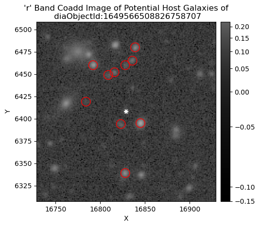
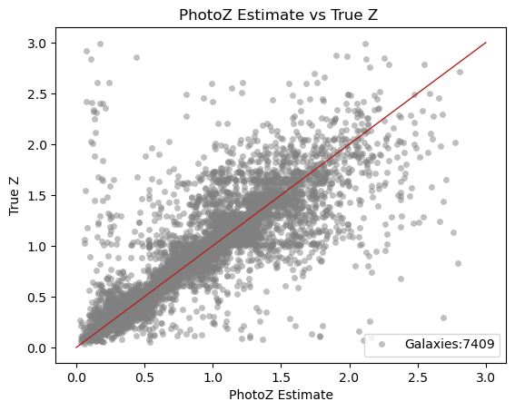

Research Project
Rubin Observatory DP0.2
Under the guidance of Dr. Brian Morsony, I contributed to Rubin Observatory Data Preview 0.2 by adapting a Color-Match Nearest Neighbor photometric redshift estimator for simulated LSST datasets.
Project Overview
This project supported preparation for the Legacy Survey of Space and Time by testing early data-processing workflows using DP0.2 galaxy catalogs. By tailoring the CMNN PhotoZ algorithm for LSST-style data products, I produced photometric redshift estimates without spectroscopic inputs.
I also developed methods to associate simulated Type Ia supernovae with likely host galaxies, helping support early transient-host matching for Rubin science.
Selected Figures

